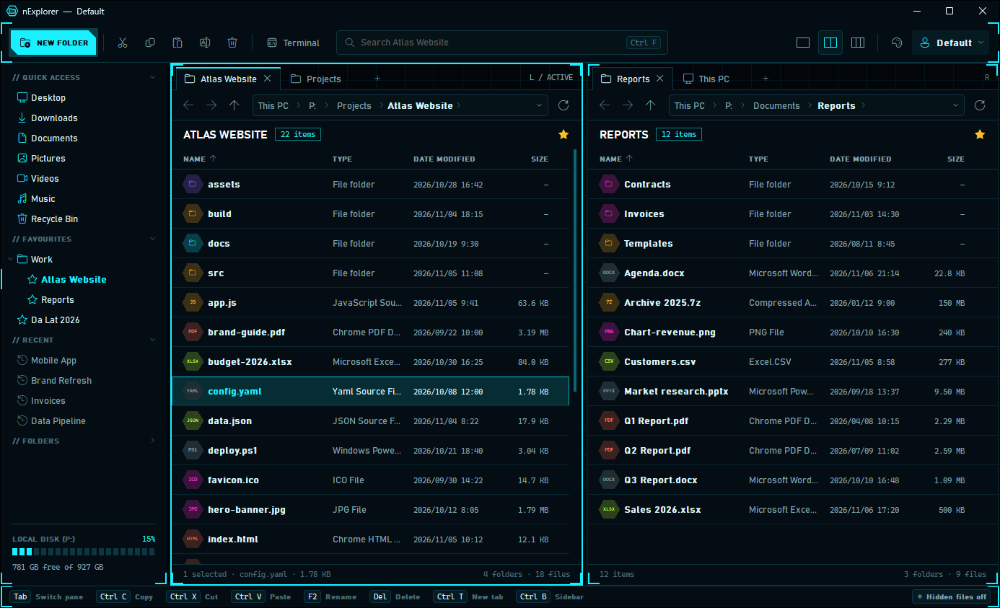
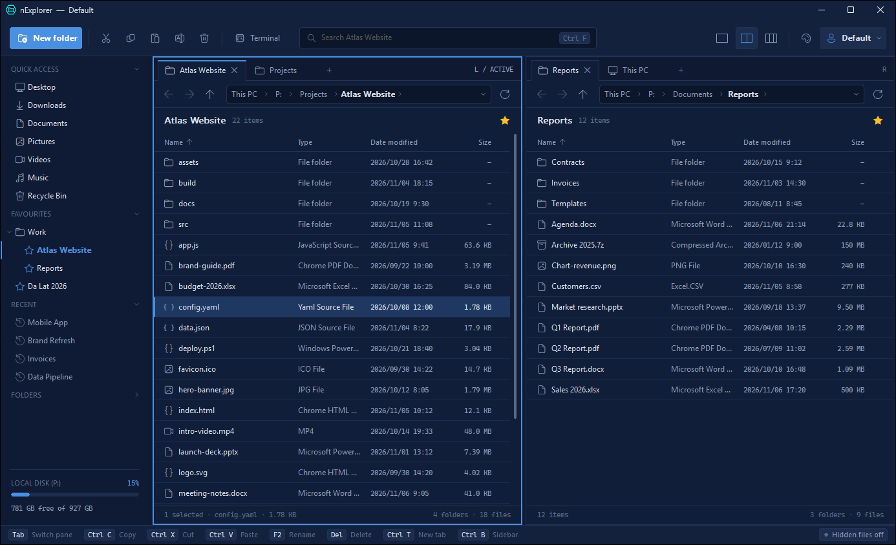
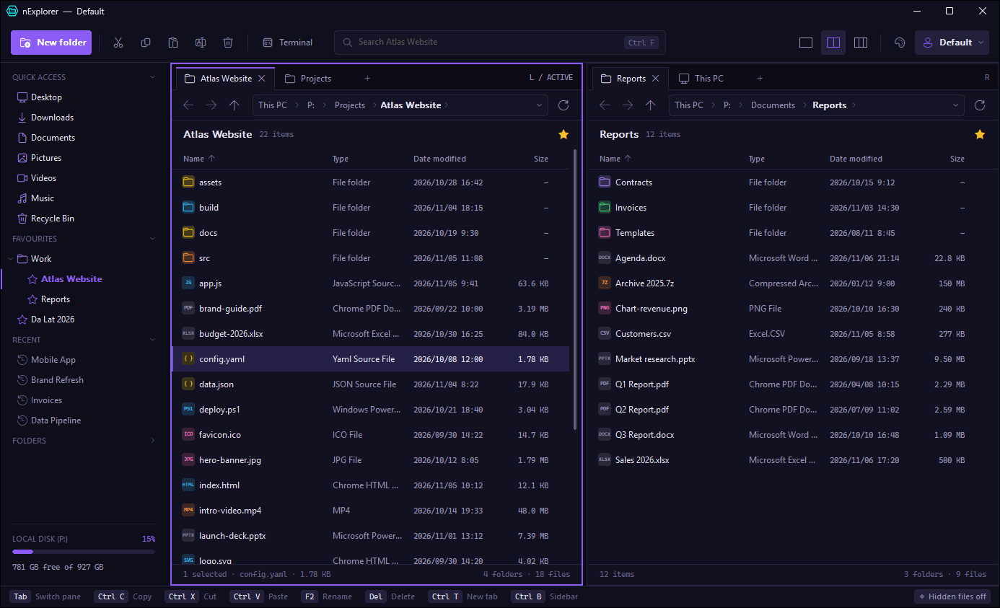
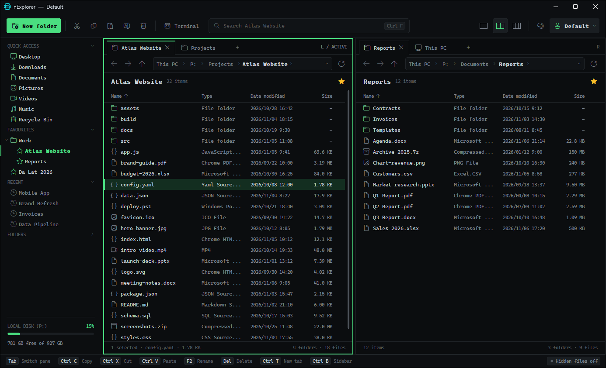
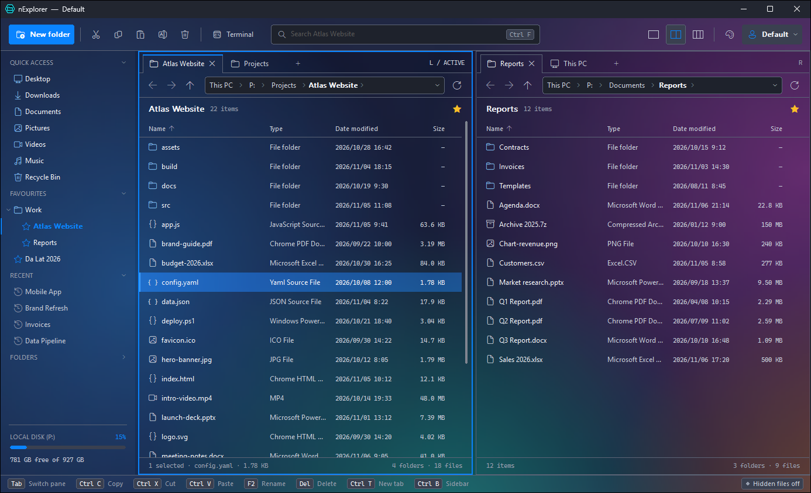
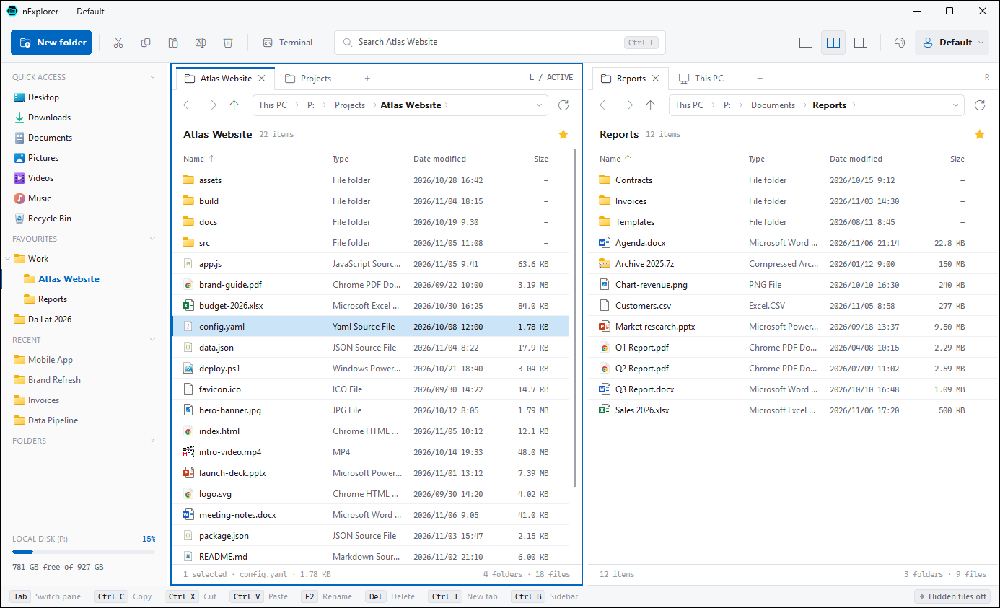

1、2 或 3 个窗格，各有标签页
文件夹并排放置，直接复制。Ctrl+1 / 2 / 3 切换，拖动分隔条，用 Ctrl+S 把整个布局保存为配置文件。
只有一个小巧的 exe。最多三个带标签页的窗格，边输入边找到文件的搜索，不用等待的删除，还有让人想多看几眼的主题。






功能
文件夹并排放置，直接复制。Ctrl+1 / 2 / 3 切换，拖动分隔条，用 Ctrl+S 把整个布局保存为配置文件。
输入时结果就会陆续出现，近的文件夹优先。多个词顺序不限，忽略重音：duong 能找到“Đường”，cafe 能找到“Café”。无需索引，结果始终最新。
在 NTFS 驱动器上，Del 能把巨大的文件夹几乎瞬间移入回收站。Shift+Del 像 rmdir /s /q 一样快，被锁定的文件会在最后统一报告。
选中文件按 Ctrl+C：粘贴到资源管理器是文件，粘贴到 Excel 和 Word 是可点击的链接（名称 → 路径），粘贴到记事本是完整路径。
无需其他软件即可压缩为 ZIP（支持中文文件名、超过 4 GB 的文件）。安装 7-Zip 后还可使用 .7z、可隐藏文件名的 AES-256 密码和“解压到此处”。
自己固定的快速访问、像浏览器书签一样分组的收藏夹、最近的文件夹、文件夹树和剩余空间。
复制和移动在后台进行，显示项目数、MB、速度和取消按钮。替换 / 跳过 / 保留两者，可单独选择也可应用到全部冲突。
Void、Flux、Mono、Nexus（可选四种霓虹色的 HUD 风格）、Glass（壁纸上的磨砂玻璃）和 Light。还可设置背景图片和窗口透明度。
搜索
在任意文件夹按 Ctrl+F。搜索该文件夹及其所有子文件夹；在“此电脑”中搜索则覆盖所有本地驱动器。
| 输入 | 找到 |
|---|---|
tai lieu | 包含所有词的名称，顺序不限：Tài liệu học tập.docx、lieu-tai.txt |
"bao cao" | 包含完整短语的名称 |
*.pdf IMG_20??* | 对整个名称使用通配符 |
=readme.md | 只匹配这个名称 |
剪贴板
| 粘贴到 | 得到 |
|---|---|
| 资源管理器、nExplorer | 文件和文件夹本身 |
| Excel、Word、Outlook | 显示名称、指向完整路径的链接 |
| 记事本、文本框 | 完整路径 |
键盘
下载
nexplorer.exe，1.0 MB。只有一个文件，没有安装程序。
例如 D:\Tools\nExplorer 或 U 盘。设置保存在 exe 旁边的 nexplorer.ini 中，所以请选择可写入的文件夹（不要放在 Program Files）。
双击即可。固定到任务栏，随时一键打开。
点击更多信息，再点击仍要运行。nExplorer 是新程序，尚未进行代码签名，所以 SmartScreen 还不认识它。
删除 nexplorer.exe 和 nexplorer.ini 即可，没有安装任何其他东西。
删除 nexplorer.ini，所有设置、收藏夹和配置文件都会恢复默认。
f48368259e08f5af6e5006ab4acd1ea6cb4da313aa40cc37cbaa8cc1901d05dd nexplorer.exe
常见问题
是的。下载后可在任意多台电脑上使用。
两者并存：资源管理器、桌面和任务栏保持不变。文件管理用 nExplorer，其他照常用资源管理器。
它在后台线程读取文件夹，并省去了拖慢资源管理器的东西：不加载外壳扩展、不生成缩略图、不使用搜索索引。
在 exe 旁边的 nexplorer.ini 中：收藏夹、快速访问、配置文件、主题和窗口布局。复制这两个文件，就能把设置带到另一台电脑。
不需要。ZIP 是内置的；没有 7-Zip 时会使用 Windows 自带的 tar.exe 解压。安装 7-Zip 后还能使用 .7z、密码和更多格式。
不会。nExplorer 没有任何联网代码：没有遥测、不检查更新、没有广告。只有在你打开网络共享文件夹时，才会使用 Windows 的文件共享。
Windows 10（1607 及以上版本）和 Windows 11（64 位）。无需管理员权限。